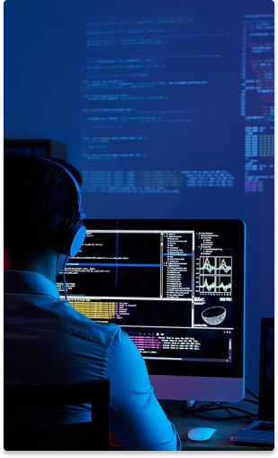

Desenvolvedora Web | Front-end e Back-end
Lyrian Saran
Projetos Web

Projetos Web
Um dos meus primeiros projetos de FrontEnd, desenvolvido para praticar a criação de páginas web. O site apresenta informações sobre a banda Black Sabbath e seus maiores sucessos, utilizando uma estética inspirada na identidade visual da banda.
Projeto desenvolvido para praticar o desenvolvimento de aplicações web com PHP, contendo funcionalidades de cadastro e login de usuários, gerenciamento de produtos, categorias e carrinho de compras. O projeto também inclui páginas dinâmicas e funções responsáveis pelo processamento das informações da aplicação.
Projeto desenvolvido durante as aulas e meu primeiro projeto utilizando Node.js. Consiste em uma aplicação de controle financeiro, desenvolvida com Node.js, EJS, HTML e CSS, com integração a banco de dados e funcionalidades de cadastro, visualização e exclusão de registros.
Projeto desenvolvido em grupo para uma dinâmica do Senac, criando uma plataforma gamificada para divulgação e acompanhamento das apresentações dos projetos integradores. Os participantes recebiam pontuações a cada apresentação assistida, e os que acumulassem mais pontos apareciam em um ranking de participação. Fiquei responsável pela página inicial, com os cards dos projetos, além de contribuir com o design da plataforma e a criação dos GIFs do Pac-Man, utilizados para representar o progresso dos participantes.
Projeto integrador desenvolvido em grupo, com a proposta de criar uma rede social com diferentes funcionalidades. A ideia inicial da plataforma de troca de produtos, sem fins monetários, partiu de mim e foi posteriormente integrada ao projeto pelo grupo. Fui responsável pelo desenvolvimento da área de trocas, incluindo publicação de produtos, visualização dos itens e interação entre usuários para negociação.
Concluí o curso de Assistente de Desenvolvimento de Aplicativos Computacionais, com foco em desenvolvimento web e programação. Durante a formação, desenvolvi projetos práticos individuais e em grupo, trabalhando na criação de interfaces, funcionalidades e soluções para aplicações web.
Técnico
Publicidade e Propaganda
Senac
Técnico
Teatro
Cena IV Shakespeare Cia
Qualificação
Assistente de Desenvolvimento de Aplicativos Computacionais
Senac
Introdução à Prática da Programação
20 horas
Desenvolvedor Web Back-end Node.js
40 horas
Imersão Front-end com IA
2 horas
Inglês / Intermediário